First Week - February 23-27, 2026
During the week, I assisted with several administrative and documentation tasks in the office. I helped transfer office materials and worked on editing and organizing certificate names to ensure accuracy and consistency. I also assisted in sending client satisfaction emails and continued communicating with clients regarding feedback. Part of my task was drafting and refining the email content that would accompany the certificates. Additionally, I organized digital files by renaming certificates and uploading related images to Google Drive, making sure that the documents were properly labeled and easy to access. These activities helped improve the organization of files and supported the office’s communication with clients.


Second Week - March 02-06, 2026
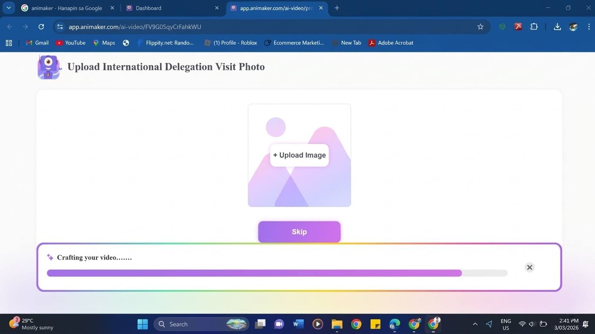
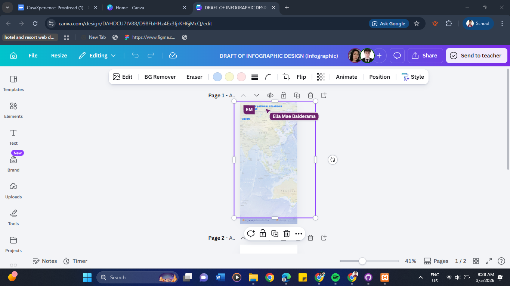
This week involved meetings and progress related to the infographic project. An initial meeting was conducted to discuss the infographic design and planning. Work then began on drafting the infographic layout and visual elements. During the week, important documents were also delivered to the OP and later to the OSAS office, including the Dean and administrative offices, for signatures. The infographic design continued to be developed and refined, alongside participation in a conference room meeting for further discussion and coordination. Toward the latter part of the week, the infographic draft was reviewed with Ma'am Abby for feedback and improvements. Additional time was also spent gathering the necessary information and content that will be included in the final infographic.
Third Week - February 9-13, 2026
This week included several office tasks, document processing, and event assistance. Time was spent working on Canvas-related activities and delivering important papers to the OVP for signature. During the YMCA event, assistance was provided in multiple roles including videography and photography, serving, and helping with cleaning after the program. Other office responsibilities included retrieving several items from the old IRO office and transferring them to the new office located at the library. Additionally, papers requested by the IRO staff were picked up from the Legal Office.

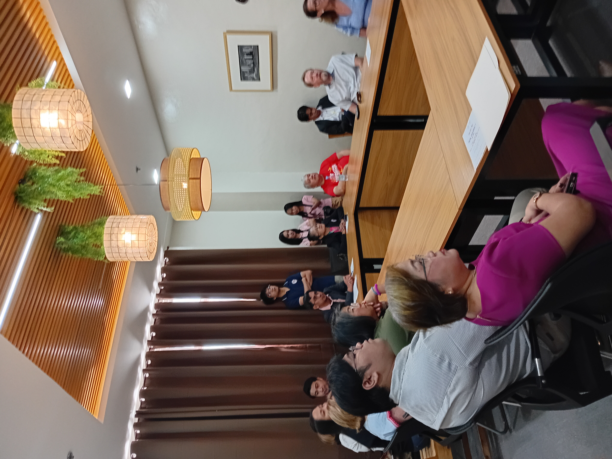
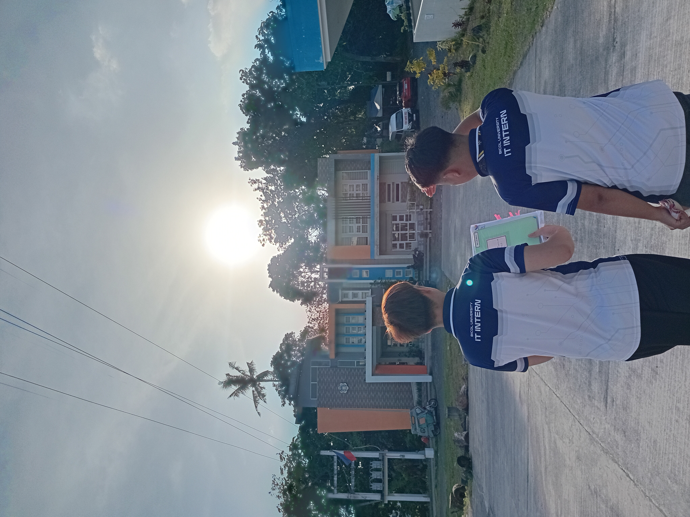
Fourth Week - February 16-20, 2026
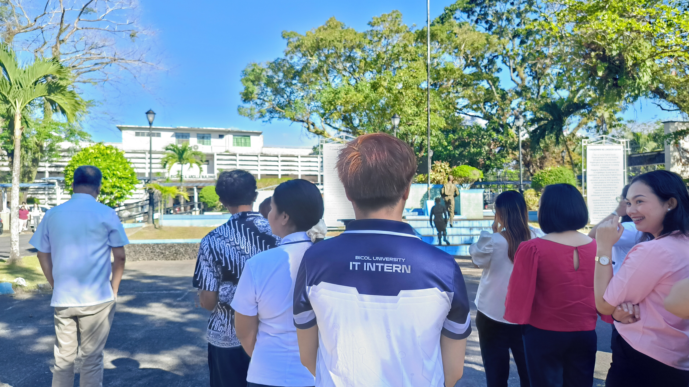
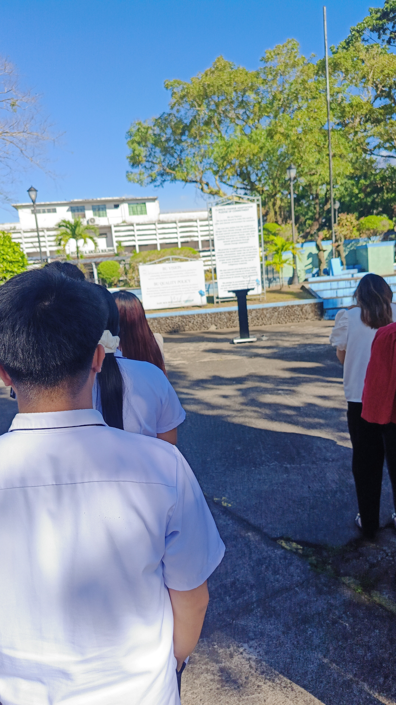

This week involved a mix of technical tasks, document handling, and continued creative work on the infographic project. Initial tasks included testing routers and checking names in Google Drive for accuracy and organization. Work on the infographic design continued throughout the week, with ongoing drafting and refinement, including time spent working from home. Additional responsibilities included receiving and processing documents from various offices such as the College of Law and the PLY/FLY office. A QR code was also created as part of the infographic requirements, contributing to the overall development and completion of the design.
Fifth Week - March 23-27, 2026
This week focused on editing tasks, event preparation, and ongoing design work. A significant portion of the time was dedicated to editing the International Report, with continuous revisions carried out throughout the week, including work-from-home days. Assistance was also provided to foreign visitors, ensuring their needs were accommodated. Additional responsibilities included helping set up the conference room for law students. Work on drafting the infographic design also continued alongside the report editing tasks, contributing to the overall progress of both projects.

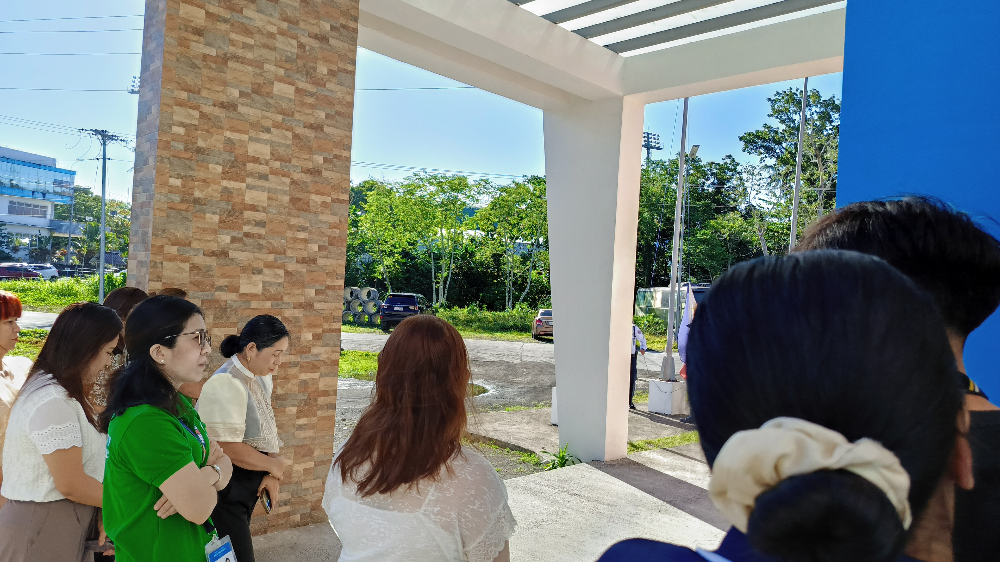
Sixth Week - March 30 - April 3, 2026
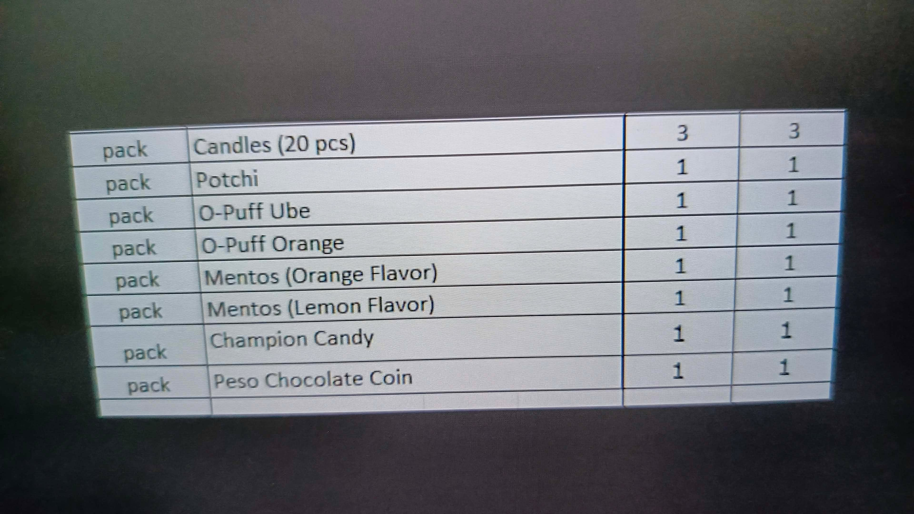
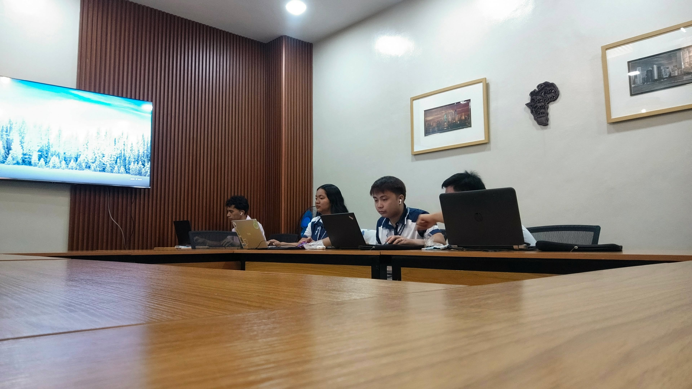
This week involved technical preparations, live streaming support, and administrative tasks. Initial activities included conducting trial-and-error sessions using Zoom in preparation for a live stream. Assistance was also provided during the actual live streaming event by handling technical aspects to ensure smooth operation. Office responsibilities included receiving documents from the Old CAL and helping maintain cleanliness within the workspace. During work-from-home days, tasks included communicating with ASEAN ERA participants through text to provide updates and coordination. Overall, the week combined technical support, communication, and routine office duties.
Seventh Week - April 06 - 10, 2026
This week focused on document processing, editing tasks, and administrative support. Several documents were delivered to different offices, including the OP, OVDPP, Legal Office, and CBEM, as part of routine coordination and processing. Editing tasks were also carried out, including revisions on the Summary of Canvass and the BU IRO International University Partners document. Additional work involved editing and inputting details related to official foreign travel, which required careful attention to accuracy. Some overtime was rendered to complete assigned tasks and ensure timely submission of outputs. Overall, the week was centered on documentation, coordination, and continuous administrative work.
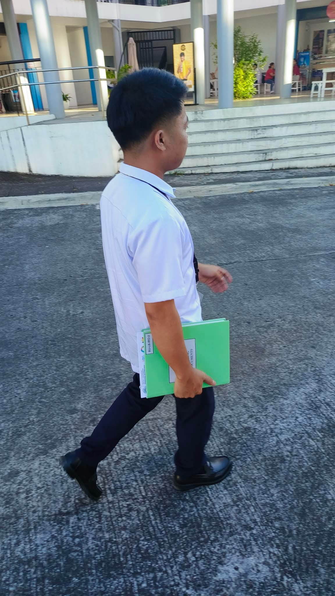
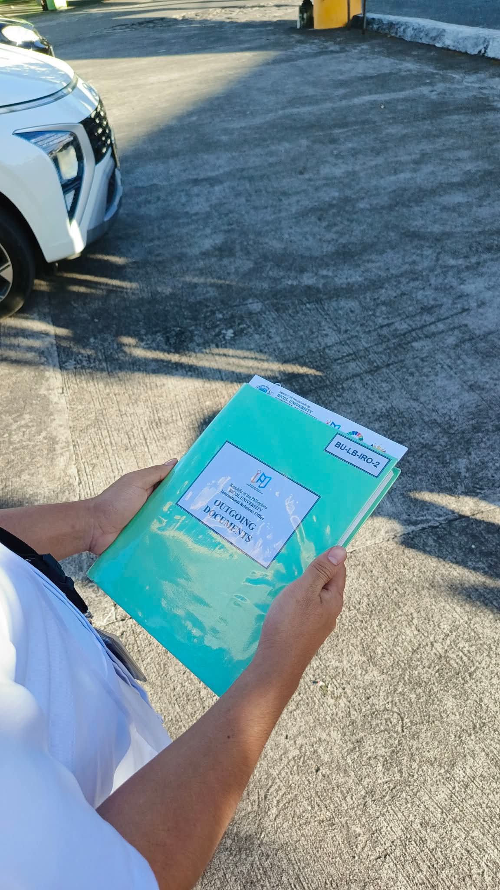
Eighth Week - April 13 - 17, 2026
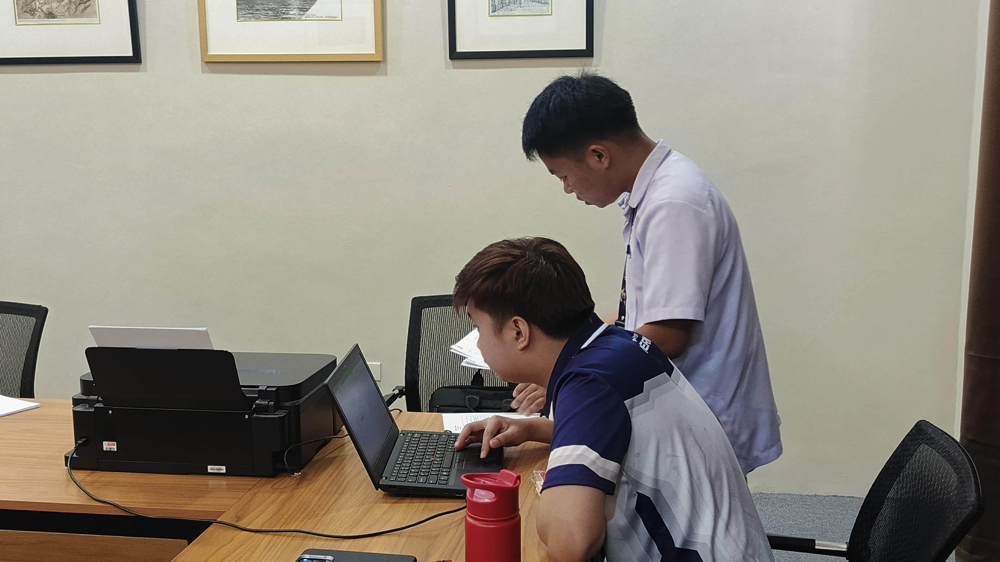
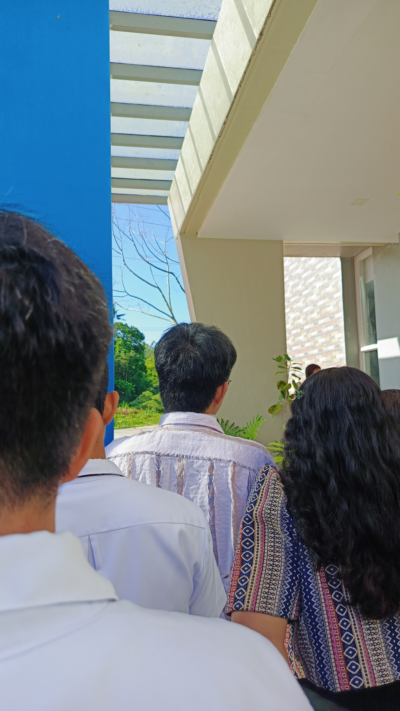
This week involved routine office tasks and document handling. Responsibilities included printing necessary materials and purchasing hardware supplies needed for office use. Several documents were delivered to different offices for processing, including the NLP office, as well as the Accounting, Financial, CGAD, and CN Building offices. These tasks focused on ensuring proper coordination and timely submission of required papers. Overall, the week was centered on administrative support and maintaining the flow of office operations.
Ninth Week - April 20-24, 2026
This week involved administrative responsibilities, report preparation, and creative exploration. Several receiving papers were delivered to different offices, including New CAL, BUCEILS, and OP, as part of the regular document processing tasks. Time was also dedicated to accomplishing reports and ensuring that required outputs were completed properly. In addition, efforts were made to explore animation tools and practice animation making to enhance creative and technical skills. Another receiving paper was also delivered to the OP office during the week, contributing to the continuation of office coordination and documentation tasks.

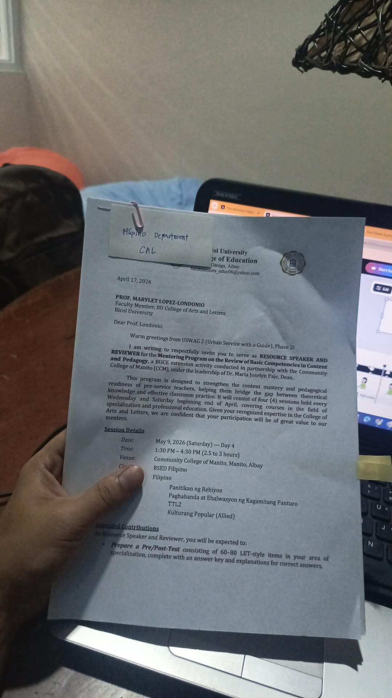
Tenth Week - April 27 - May 1, 2026
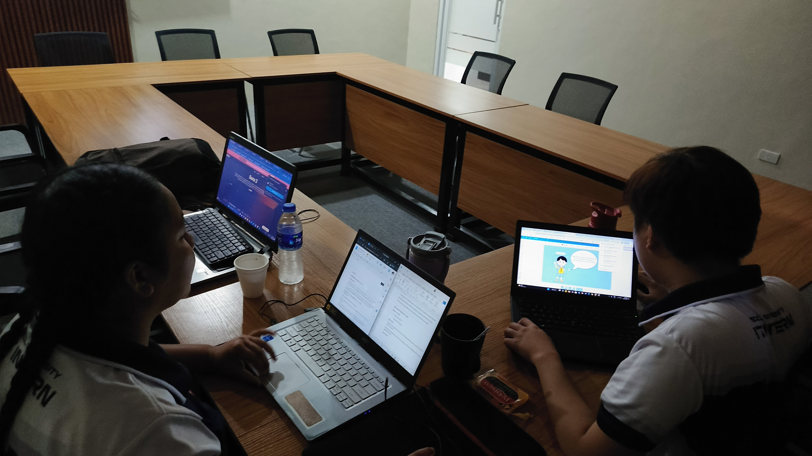
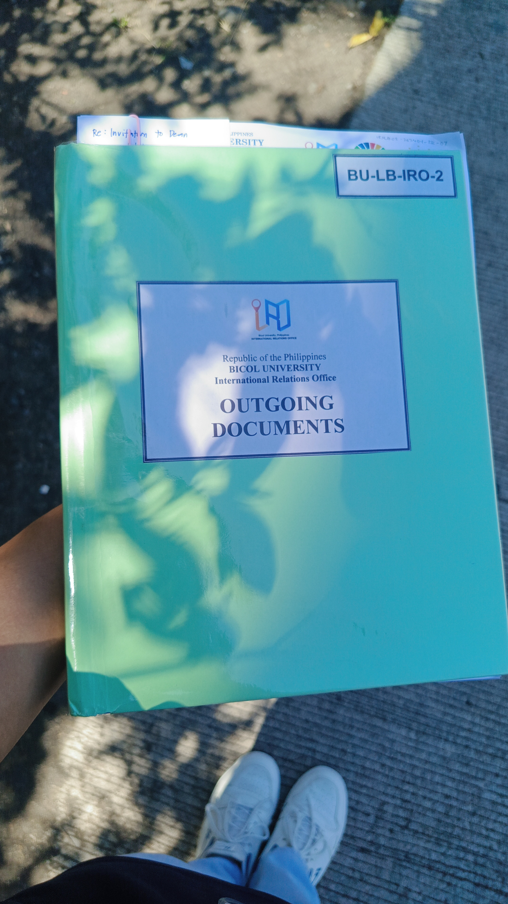
This week involved document processing, encoding tasks, and continued creative work related to animation. Several documents were scanned and receiving papers were delivered to the OP and VPAA offices for processing and coordination. Administrative work also included encoding hard copies of memorandums to organize and digitize important records. Time was dedicated to discussions and planning for animation projects, followed by the actual creation and development of animation outputs. Video editing and animation work continued throughout the week, allowing further improvement of creative and technical skills while balancing regular office responsibilities.